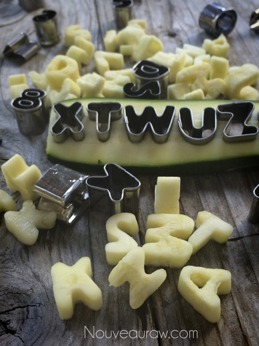
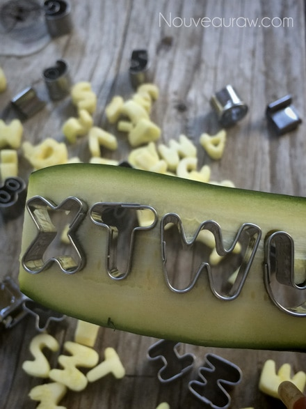
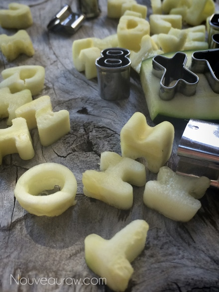
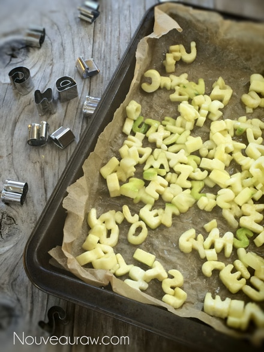
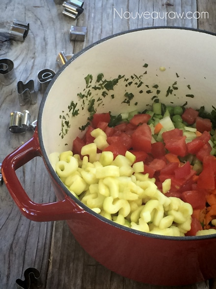
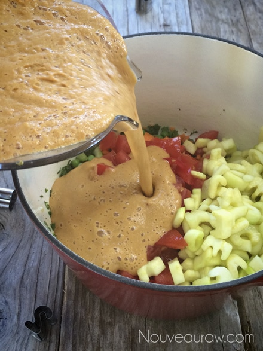
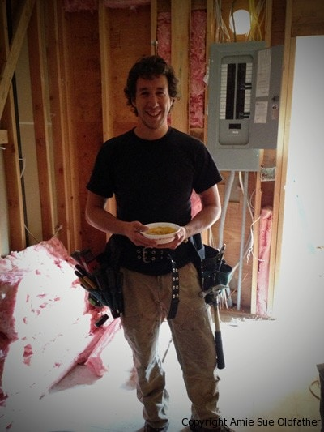

Vegetable Alphabet Soup

~ raw, vegan, gluten-free, nut-free ~
Today, I had entirely too much fun in the kitchen! And as you scroll through this recipe you will be bombarded with pictures to prove it. What can I say, I am a proud soup-momma! As I was busy playing working in the kitchen, creating this soup, I had the ABC Alphabet song stuck in my head.
And the record must have had a skip on it because it played over and over and over. I spied these cookie cutters at the store last week, and I am not sure how it happened, but these little guys soon found their way into my home. My knees buckle under the influence of kitchen gadgetry.
I have so many ideas rolling around in my noggin what I want to create with them, but first things first… soup! The Fall air was wet and chilly, so a bowl of soup was in order! This soup can be eaten at room temperature or heated up on the stove. That is your call. Keep in mind that the soup will get even better the following day as the ingredients start to meld together. Day one is good; day two is even better!
This recipe would be such a fun way to get your kids involved with meal preparation! I always thought the spiralizer was such an amazing tool and would excite children, but these almost take the cake. Let them cut out the letters and spell things along the way. If you don’t want to buy these alphabet cutters, you can easily make the zucchini into any shape or form for this soup.
Remember, zucchini is the “pasta noodle” replacement in recipes. You could dice it up into small chunks, make noodle ribbons with a potato peeler or a spiralizer machine if you have one. I used Wilton Fondant Alphabet Cookie Cutters run $10 for the full alphabet and number set… a small price to pay when creating beautiful memories with your loved ones. I couldn’t find the same ones online with Amazon but (
these) could work.
I mean really, look at these adorable letters! They are guilt-free and gluten-free. Also, if you don’t have a blender, you could make this in a food processor. Personally, by the time all was said and done, I had blended mine on the Blendtec “soup” button several times.
While I was playing around, spelling out words on the cutting board, my husband walked by, and I asked him to give it a taste test. I held my breath… HE LOVED IT! I knew it was good, it tasted fantastic to me but for him to love it, well it just puts the biggest smile on my face. He was walking around talking to Verizon on the phone, trying to set my new iPhone, I mean camera. Lol (I refer to my iPhone as my camera rather than a phone). And as he was on the line talking to the rep, he kept taking spoonfuls and moaning and groaning, telling the rep that I had just made the best soup ever. Now, I am not sharing this with you to toot my own horn… my hope is that it will be a strong encouragement for you to make this soup yourself.
Nutritional Data
Whole recipe: Calories 910 / Fat 25 g / Carb 137 g / Fiber 33 g / Protein 41 g
Per 1 cup serving: Calories 152 / Fat 4 g / Carb 23 g / Fiber 5.4 g / Protein 7 g
yields 6 cups
- 2 cups water
- 2 1/2 cups tomato, rough chopped (2 large)
- 2 cups zucchini (leftover from making the alphabet)
- 4 sun-dried tomatoes, rehydrate if hard
- 1/2 cup corn, fresh or frozen
- 1/2 cup carrot, rough chopped (1 large carrot)
- 1/4 cup rough chopped celery stalk (1 stalk)
- 1/4 cup hemp seeds
- 1 Tbsp fresh lemon juice
- 1 Tbsp nutritional yeast
- 2 Medjool dates, pitted
- 2 vegetable bullion cubes
- 1 garlic clove, peeled
- 1 tsp Italian seasoning
- 1/2 tsp dried oregano
- 1/4 tsp Himalayan pink salt
- 1/4 tsp black pepper
Hand mix in at the end:
- 1 1/2 cup zucchini alphabet letters
- 1 cup diced cherry tomatoes
- 3/4 cup peas, frozen or fresh
- 1/2 cup corn, frozen or fresh
Preparation:
- I used 2 zucchini total for this recipe. I sliced the zucchini into thin strips with my mandolin and punched out the letters. See photos below. The leftovers from the letter making are what I used in the soup base. Therefore, no ingredients were wasted.
- Place in the blender the top ingredients listed under ” blend to a puree.” Blend to a creamy soup mix. I used the “soup” button on my Blendtec.
- Pour the puree into a large bowl and hand mix in the; alphabet letters, cherry tomatoes, peas, and corn.
- Serve at room temperature. To warm the soup, you can place the bowl into the dehydrator and warm it to the desired temperature. Another alternative is heating it on the stove. If you wish for the soup to remain raw, only warm it to 115 degrees.
Warming Suggestions:
- Allow the soup to warm to room temperature and enjoy.
- Place the serving bowl in hot water, allowing it to heat up before adding the soup. This will help take a little extra chill off of the soup and make it cozy warm to hold in your hands.
- Pour a serving size of soup in a mason jar, place lid on top, and tighten… immerse the jar in hot water till it warms the soup to your liking.
- Pour into a small saucepan and heat on the stove. Use your fingertip as the temperature gauge; it shouldn’t get too hot for your finger. You can also use a thermometer gauge if this concerns you.
- Dehydrator – if you have a “box” shaped dehydrator such as the Excalibur, pour the soup into a wide mouth baking dish and turn the heat to 145 (F) degrees. Warm for 30-60 minutes. You can also place the temperature at 115 degrees and heat for 3-4 hours. You will need to gauge this. The more soup that exposed to the air, the quicker it will warm.
![To make the zucchini alphabet "noodles", you will need a mandolin, zucchini, and alphabet fondant cutters. If you don't own a mandolin, you can use a sharp paring knife and cut thin strips. Be slow and careful. If you can't find organic zucchini be sure to peel the zucchini. Slice the zucchini lengthwise about 1/8" thick. If your zucchini has large seeds, only slice down to those. If you have large seeds it will be mushy when trying to cut out the letters. Don't worry though, that seeded part will get used in the rest of the recipe, so nothing goes to waste.](../assets/fb0afefd316a6cbb26995ba3.jpg "To make the zucchini alphabet \"noodles\", you will need a mandolin, zucchini, and alphabet fondant cutters. If you don't own a mandolin, you can use a sharp paring knife and cut thin strips. Be slow and careful. If you can't find organic zucchini be sure to peel the zucchini. Slice the zucchini lengthwise about 1/8\" thick. If your zucchini has large seeds, only slice down to those. If you have large seeds it will be mushy when trying to cut out the letters. Don't worry though, that seeded part will get used in the rest of the recipe, so nothing goes to waste.")
To make the zucchini alphabet “noodles,” you will need a mandolin, zucchini, and alphabet fondant cutters. If you don’t own a mandolin, you can use a sharp paring knife and cut thin strips. Be slow and careful. If you can’t find organic zucchini be sure to peel the zucchini. Slice the zucchini lengthwise about 1/8″ thick. If your zucchini has large seeds, only slice down to those. If you have large seeds, it will be mushy when trying to cut out the letters. Don’t worry though, that seeded part will get used in the rest of the recipe, so nothing goes to waste.

Photo below ~ Press the cutters into the zucchini.


Spread the letters out onto a baking pan and sprinkle a good dose of salt on top. Set this aside while you prepare the rest of the soup. The salt will draw the water out of the letters, making them softer.



Meet Reuben… our friend and also an amazing electrician. He happily agreed to be a taste tester for my soup. I explained that he could eat it at room temperature, as a person eating a raw food diet would… but that if he didn’t care for it “raw,” I could heat it for him. He taste tested it in the “raw” form and said he liked it that way. You know that saying that goes something like, “When in Rome, do as the Romans do”? Well, he agreed, “When in a raw kitchen, do as the raw foodies do!” Thank you, Reuben for all the hard work you do and for allowing me to put your picture on Nouveau Raw!

See all that destruction in the background? I won’t go into details about that just yet but I will give you a hint… Nouveau Raw Kitchens….
© AmieSue.com